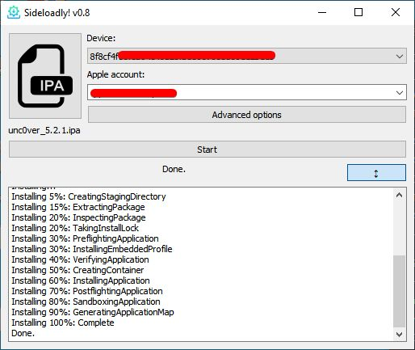
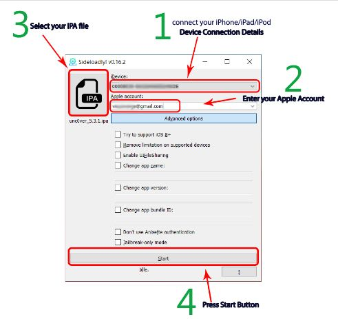
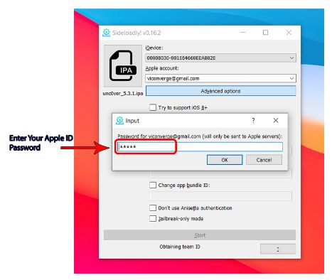
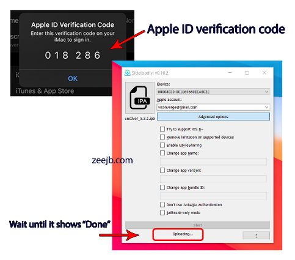
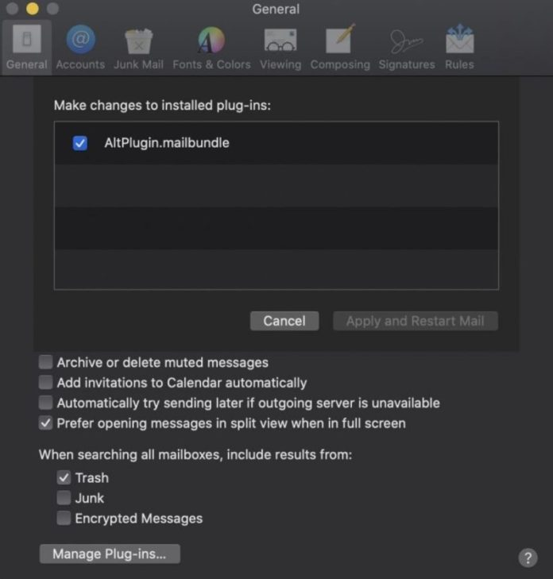
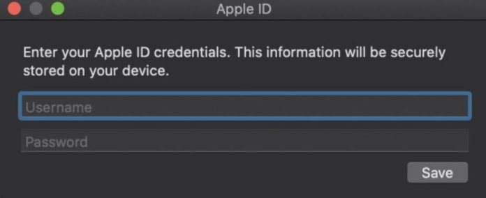

IPA Sideloading
Sideloading is the process of installing apps on your iDevice (iPhone/ iPad/ iTouch) using .IPA files.
TIP:
Use a new Apple ID with 2FA security disabled for these intallation methods.
Sideloadly is an IPA sideload tool that allows users to install IPA files directedly on iDevice with your own free developer account. With this tool you will have a free apple developer account, by using it you can sideload 10 apps but you can activate only 3 apps. Currently Sideloadly works on Windows and macOS operating systems only.
- Apps can be sideloaded with a free or Paid Apple developer account.
- Easy sideloading with drag and drop support.
- It is possible to change the app name on your Homescreen.
- It is an available jailbreak only installation option.
- It is supported with Windows operating system.
- It is possible to troubleshoot easier with installation logs.
Requirements:
- iPhone, iPad, or iPod touch.
- A computer running Windows operating system or virtually running Mac OS.
- Latest iTunes (x64) (x32) Installed.
- Sideloadly app installed.
- Internet connection.
- Open Sideloadly app. 
- Connect the device with PC. Drag the iPA file into Sideloadly tool. 
- Provide Apple ID and the Password. 
- Verification (also known as two-factor authentication). 
- Waiting until completing the process of installing iPA.
- Go to Settings > Profiles and devices management > Trust the developer.
- Now you have completed the iPA sideloading.
tap image to enlarge
tap image to enlarge
tap image to enlarge
tap image to enlarge
AltDeploy is a mac OS solution for signing and sideloading IPA files to your iDevice, including some jailbreak tools, without worrying about app certificates being revoked. With Alt Deploy, you will get a Mail app add-on; this must be enabled in client preferences for the app. Once enabled, AltDeploy will work, but you must ensure your Mail app is open all the time you use AltDeploy.
Requirements:
- iPhone, iPad, or iPod touch.
- A MAC or Windows computer virtually running mac OS (VirtualBox).
- Latest iTunes (x64) (x32) Installed.
- Internet connection.
- Download AltDeploy onto your Mac.
- Extract the zipped contents and open AltDeploy.app.
- If security settings are enabled, go to Settings > Security and Privacy option and enable.
- Run the Mail.app and go to Preferences.
- Click General > Manage Plugins.
- Activate the AltPlugin.mailbundle.
- Restart the Mail.app.
- Launch AltDeploy app on your Mac.
- Plug your iDevice into your Mac.
- Choose the IPA file you want to sideload and click Start.
- Type in your Apple ID credentials.
- Open iOS Settings and go to General.
- Tap on Device Management.
- Find the certificate for the sideloaded app and tap it.
- Tap Trust and close settings.
- You can now run your app on your iDevice.
AltServer Patcher is a utility that patches AltServer to install any IPA from a web URL.
NOTE: This method requires Windows 8.1/ 10-64bit in order to work.
Requirements:
- iPhone, iPad, or iPod touch.
- A computer running Windows 8.1/ 10 64bit.
- Latest iTunes (x64) (x32) and iCloud installed.
- Internet connection.
- Make sure iTunes and iCloud are both installed. You will need to have both versions downloaded directly from an internet browser, not through the Microsoft Store. If you have installed iTunes/ iCloud from the Microsoft Store, you will need to uninstall that version, and re-install through an internet browser.
- After you have installed iTunes and iCloud, ensure you are logged into both of them, using the same Apple ID that you are using on your Apple device. Once you have done this, you can close iTunes and iCloud.
- Use your actual password NOT app-specific password.
- If you're asked if you want to install the Windows version, simply decline.
- Download and install AltServer Windows version.
- Download and install AltServerPatcher.
- Open AltServerPatcher app. If it asks you if you would like to allow the program to make changes to your computer, select “Yes”.
- Connect your Apple device to your computer.
- Under “Utility to Install”, select “Custom IPA Link”.
- Under "IPA URL", paste the IPA download link into the text box. Make sure you copy the URL exactly.
- Press "Patch" and allow AltServerPatcher a few seconds to process the IPA link. You should then get a message confirming that AltServer is ready to install the IPA file! Press “OK” to get the confirmation message to go away.
- Attempt to open AltServer. It will look like nothing has happened, however in the right corner of the taskbar, you should notice the AltServerPatcher icon has appeared (may appear under hidden icons, just click the arrow and it will appear).
- Click on this icon, hover over "Install Altstore" and then click on your Apple device's name that should appear.
- Enter the Apple ID and password that you are using for your Apple Device, iTunes and iCloud. It will also ask for a code sent to your phone if you have 2FA enabled.
- You'll be notified that some apps may not work the same, just ignore this and click "OK/ Install".
- If all steps have been followed correctly, you'll notice a notification will appear in the bottom-right corner of the screen that says "Installing Altstore to (Apple device name)". To clear any confusion, it isn't installing AltStore - it is installing whats on the IPA link.
- Wait a few minutes (depends on ur internet speed), and the app will appear on your Apple device! Once you can see the app icon on the home screen, you may disconnect your Apple Device from the computer.
- On your Apple device, go to Settings > General > Device Management > Apple ID email address and TRUST the app.

tap image to enlarge

tap image to enlarge

tap image to enlarge

tap image to enlarge

tap image to enlarge

tap image to enlarge

tap image to enlarge

tap image to enlarge

tap image to enlarge

tap image to enlarge

tap image to enlarge
NOTE: You may experience issues during installation due to Windows Defender blocking them (false positive). Temporary disable windows security's real time protection while using Altserver to install apps then enable it when done.
xCode is Apple's integrated development environment (IDE) for macOS, used to develop software for macOS, iOS, iPadOS, watchOS, and tvOS.
Requirements:
- iPhone, iPad, or iPod touch.
- A MAC or Windows computer virtually running mac OS (VirtualBox).
- xCode
- iOS App Signer.
- Internet connection.
- Open Xcode app.
- Create new Xcode Project (Shift + Cmd + N) > Single View Application.
- Fill out Product Name > Organisation Name > Organization Identifier.
- Select the folder where the .IPA is saved/ located.
- Select the top most name on the left hand side bar.
- Navigate to Signing & Capabilities (top bar on project side window).
- Select Team or Add an Account (for adding you need to add your AppleID with your actual password).
- If it doesn’t show any errors open iOS App Signer.
- Select the .IPA > change Signing Certificate to Apple Development if yours is on iPhone > select the Profile created with xCode.
- Press Start then input a New name for the file.
- Go back to xCode then select Window > Devices and Simulators (Shift + Cmd + 2).
- With your iDevice connected, under Installed Apps, select the "+" and the file generated by the app signer.
- Once it’s done installing, on your device go to Settings > General > and trust the profile like usual when impacting.
3UTools is a GUI tool that is used to install the IOS IPA file without the need of having your device jailbroken. The advantage of using this method is that you can keep playing the game 24*7 without being revoked.
Requirements:
- iPhone, iPad, or iPod touch.
- A Windows computer/ Windows running virtual mac OS/ Linux.
- Latest iTunes (x64) (x32) installed.
- 3uTools app Installed.
- Internet connection.
- Open 3utools and Click on the Toolbox Tab.
- Locate and Click IPA signature.
- Click Add File and select the IPA file.
- Click Sign with appleID (add your appleID). NOTE: Make sure that added appleID and IPA file are both selected.
- Click Start Signing and wait for it to finish.
- click iDevice > Click Apps > Click Import and Install IPA.
- Select the signed IPA from documents and wait till its done.
- Trust the App: Settings > General > Profile and Device management and TRUST the App.
Matrix Installer is a desktop tool for sideloading and installing iOS apps. It makes it possible to install any third- party app on iOS device using .IPA file.
Limitations:
- It currently supports Mac OS and Windows.
- You can only have 3 apps installed at a time.
- apps certificate expire every 7 days and have to be re-installed again.
- iPhone, iPad, or iPod touch.
- A computer running Windows operating system.
- Latest iTunes Installed.
- Maxtrix app installed.
- Internet connection.
Step 1: Make sure that you have the latest version of iTunes installed on your computer. Step 2: Remove the original app from your iDevice. Step 3: Download and save the IPA from our website, then launch Matrix Installer. Step 4: Connect your device to the PC using the USB cable. Installer will detect your iDevice. Step 5: Drag and drop the downloaded IPA file onto it. Or you can click “Device”->”Install Package…” pix Step 6: Installer will ask for your Apple ID username and password which are used to fetch the developer certificate from the Apple servers. (It’s better to create a new Apple ID) pix Step 7: Now, please be patient and wait for Impactor to perform all of the work. Step 8: Once you see the “Complete” message on it, unlock your iPhone screen and go to “Settings->General->Device Management”. Step 9: Tap the developer Apple ID and trust it. pix
Using nullxImpactor you can sideload IPA files to your iPhone/iPad running on iOS 10, 11, iOS 12, and iOS 13. However, it has to be made sure that the IPA file is hosted on a website. Similar to Cydia Impactor, nullxImpactor also requires you to provide an Apple ID along with its password for signing the IPA. Using this Cydia Impactor alternative for macOS, you can sideload third-party iOS apps and jailbreak tools like Electra, UnC0ver, Chimera, and Checkra1n.
Requirements:
- iPhone, iPad, or iPod touch.
- A MAC or windows computer running vitual mac OS.
- Latest iTunes Installed.
- Internet connection.
- Download nullxImpactor ZIP file.
- Extract the contents of the ZIP file and open the nullxImpactor application.
- Launch Mail App and navigate to Preferences > General > Manage Plug-ins.
- Activate the AltPlugin.mailbundle and restart the Mail application. 
- Connect your iPhone/iPad via USB.
- Enter the web URL of the IPA file.
- For certificate and bundle ID, you can enter your own values as well.
- Hit the ‘Install’ button.
- Enter your Apple ID credentials. We recommend creating a new Apple ID specifically for this purpose. 
- Once the sideloading process is complete, navigate to Settings > General > Profiles & Device Management and trust the profile of the sideloaded application.
- You can launch the sideloaded application now.
tap image to enlarge
tap image to enlarge
AppDB Rickpactor .......
WARNING: This method will not work with iDevice running iOS 13.3.1! Update your iOS to continue with this method. Do not upgrade to Beta iOS versions.
NOTE:
- Windows users must start at "Step #1"
- Mac/ mac OS users must start at "Step #2"
- Computer: Uninstall iTunes if it is already on the Computer. Download either the 64-bit or 32-bit iTunes (depends on your computer) and install it then reboot your Computer.
- iDevice: Open AppDB (mobile) in your Safari web browser, click "Link Device" and enter a valid Email address. Install the Profile-Management and "trust" it in your Phone Settings (Settings > General > Profiles & Device Management).
- Computer: Open AppDB (computer) in your Safari/ Firefox/ Chrome/ Opera web browser, click "Link Device" and enter the same Email address as before (step #2).
- Computer: Access your Email (used in step #2 and #3), open the email you received from AppDB and on it click "Control this Device". Your iDevice and Computer are now successfully "linked".
- Computer: Sign out of iTunes - then create a fresh Apple ID in iTunes. Do not activate "Two-Factor Authentication". After successfully creating the fresh AppleID, sign out of iTunes and sign into iTunes with your iPhones AppleID.
- Computer: Open the Apple Developer page and login with the newly created Apple ID; accept and submit the terms of the "Apple Developer Agreement". Close the Apple Developer Page.
- Computer: Open the AppDB Configuration page; enter the newly created Apple ID + Password, set all other Options to NO, NO, NO, NO, NO and YES. Then click "Save feature configuration" on the bottom-left. Close the AppDB Configuration Page.
- Computer: Download the Rickpactor.exe for Windows or the Rickpactor.dmg for Mac/ Mac OS.
- iDevice: Uninstall the original Pokemon GO and other spoofing apps. Unlock your iDevice and keep it unlocked until the end of "Step #12".
- Computer: Open the AppDB page; Click the top "Install" - a Popup appears, in it click "Cancel". It will take you to the AppDB Live Device Status Page.
- Computer: Connect your iDevice to the Computer. Close iTunes incase its open; Run the Rickpactor App/ Program you downloaded at "Step 8". On the AppDB Live Device Status Page click on "Install via Rickpactor".
- iDevice: After the successful install, "trust" its Developer in your Phone Settings (Settings > General > Profiles & Device Management).
Let us know at android- ios support channel for any error/s. Thank you! ;)